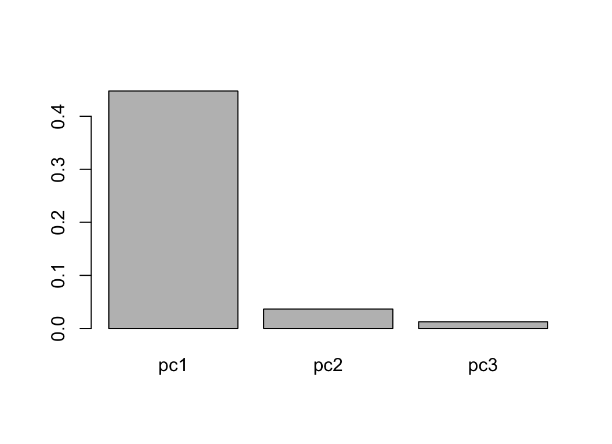
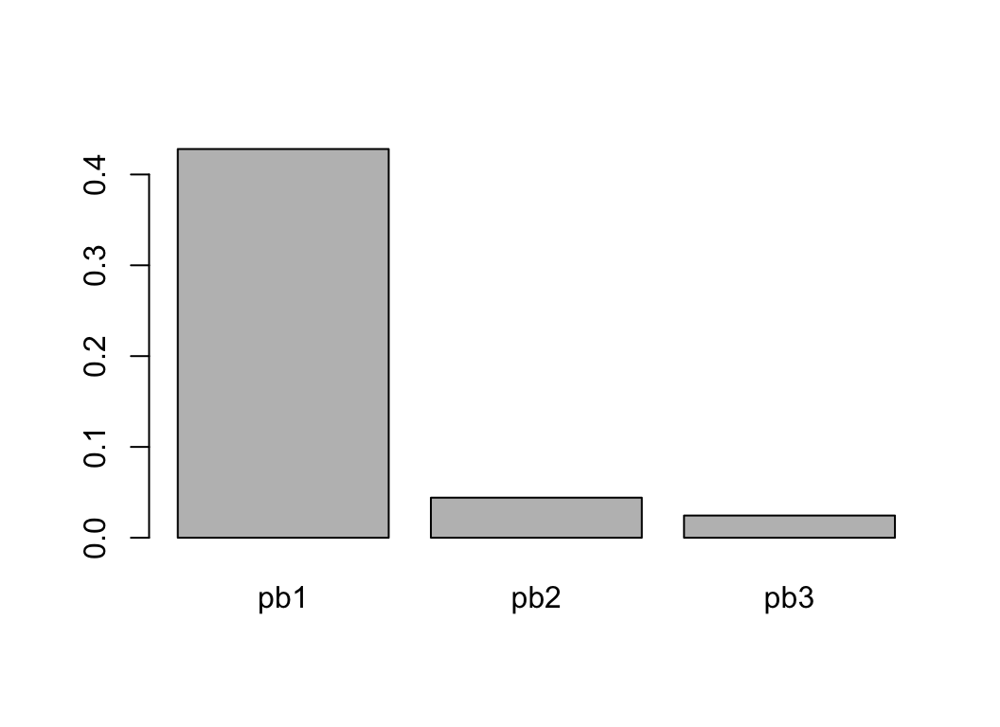

coda.base
vignettes/coordinates.Rmd
coordinates.RmdIn this vignette we show how to define log-ratio coordinates using coda.base package and its function coordinates with parameters X, a composition, and basis, defining the independent log-contrasts for building the coordinates.
In this vignette we work with a subcomposition of the results obtained in different regions of Catalonia in 2017’s parliament elections:
library(coda.base)
# By default basis is not shown, in this vignette we turn on basis showing.
data('catalan_elections_2017')
coda.base
The alr coordinates are accessible by setting the parameter basis='alr' or by using the building function alr_basis().
If you don’t want the last part in the denominator, the easiest way to define an alr-coordinates is to set basis='alr':
head(H1.alr)
#> alr1 alr2 alr3
#> 1 0.23864536 0.446503630 -0.7201917
#> 2 -0.10388120 0.216858085 -1.0473730
#> 3 0.36723896 0.542010167 -0.5320675
#> 4 0.53209369 0.798479995 -0.4799141
#> 5 0.54918649 0.477309280 -0.1028807
#> 6 -0.09742133 0.002856425 -0.6858265
#> Basis:
#> alr1 alr2 alr3
#> P1 1 0 0
#> P2 0 1 0
#> P3 0 0 1
#> P4 -1 -1 -1It defines an alr-coordinates were the first parts are used for the numerator of the log-quotient in order and the last part is used in the denominator.
The basis can be reproduced using the function alr_basis:
#> [,1] [,2] [,3]
#> [1,] 1 0 0
#> [2,] 0 1 0
#> [3,] 0 0 1
#> [4,] -1 -1 -1In fact, function alr_basis allows to define any type of alr-like coordinate by defining the numerator and the denominator:
B.alr
#> [,1] [,2] [,3]
#> [1,] -1 -1 -1
#> [2,] 0 1 0
#> [3,] 0 0 1
#> [4,] 1 0 0The log-contrast matrix can be used in basis parameter:
head(H2.alr)
#> x1 x2 x3
#> 1 -0.23864536 0.20785827 -0.9588371
#> 2 0.10388120 0.32073928 -0.9434918
#> 3 -0.36723896 0.17477121 -0.8993065
#> 4 -0.53209369 0.26638630 -1.0120078
#> 5 -0.54918649 -0.07187721 -0.6520672
#> 6 0.09742133 0.10027776 -0.5884051
#> Basis:
#> x1 x2 x3
#> P1 -1 -1 -1
#> P2 0 1 0
#> P3 0 0 1
#> P4 1 0 0Building centered log-ratio coordinates can be accomplished by setting parameter basis='clr':
head(H.clr)
#> clr1 clr2 clr3 clr4
#> 1 0.24740605 0.4552643 -0.7114311 0.008760689
#> 2 0.12971783 0.4504571 -0.8137740 0.233599031
#> 3 0.27294355 0.4477148 -0.6263629 -0.094295406
#> 4 0.31942879 0.5858151 -0.6925790 -0.212664904
#> 5 0.31828271 0.2464055 -0.3337844 -0.230903777
#> 6 0.09767651 0.1979543 -0.4907286 0.195097842
#> Basis:
#> clr1 clr2 clr3 clr4
#> P1 0.75 -0.25 -0.25 -0.25
#> P2 -0.25 0.75 -0.25 -0.25
#> P3 -0.25 -0.25 0.75 -0.25
#> P4 -0.25 -0.25 -0.25 0.75coda.base allows to define a wide variety of ilr-coordinates: principal components (pc) coordinates, specific user balances coordinates, principal balances (pb) coordinates, balanced coordinates (default’s CoDaPack’s coordinates).
The default ilr coordinate used by coda.base are accessible by simply calling function coordinates without parameters:
H1.ilr = coordinates(X)
head(H1.ilr)
#> ilr1 ilr2 ilr3
#> 1 -0.14697799 0.8677450 -0.01011597
#> 2 -0.22679692 0.9012991 -0.26973693
#> 3 -0.12358191 0.8056307 0.10888296
#> 4 -0.18836356 0.9350526 0.24556428
#> 5 0.05082486 0.5030669 0.26662472
#> 6 -0.07090708 0.5213690 -0.22527958
#> Basis:
#> ilr1 ilr2 ilr3
#> P1 0.7071068 0.4082483 0.2886751
#> P2 -0.7071068 0.4082483 0.2886751
#> P3 0.0000000 -0.8164966 0.2886751
#> P4 0.0000000 0.0000000 -0.8660254Parameter basis is set to ilr by default:
H1.ilr )
#> [1] TRUEOther easily accessible coordinates are the Principal Component (PC) coordinates. PC coordinates define the first coordinate as the log-contrast with highest variance, the second the one independent from the first and with highest variance and so on:
head(H2.ilr)
#> pc1 pc2 pc3
#> 1 0.6787536 0.35694598 -0.4319368
#> 2 0.5581520 0.57775877 -0.5396259
#> 3 0.7013616 0.25302877 -0.3467523
#> 4 0.8973701 0.25915667 -0.3125234
#> 5 0.5362270 -0.05527103 -0.1901418
#> 6 0.2676101 0.32802497 -0.3852126
#> Basis:
#> pc1 pc2 pc3
#> P1 0.3469512 -0.5978990 -0.5216720
#> P2 0.6300769 0.4877904 0.3392104
#> P3 -0.4368610 -0.3913286 0.6371926
#> P4 -0.5401671 0.5014372 -0.4547309

Note that the PC coordinates are independent:
cov(H2.ilr)
#> pc1 pc2 pc3
#> pc1 4.475083e-01 -1.109697e-15 -7.286926e-16
#> pc2 -1.109697e-15 3.650673e-02 -7.279583e-18
#> pc3 -7.286926e-16 -7.279583e-18 1.257989e-02The Principal Balance coordinates are similar to PC coordinates but with the restriction that the log contrast are balances
head(H3.ilr)
#> pb1 pb2 pb3
#> 1 -0.7026704 -0.14697799 -0.50925247
#> 2 -0.5801749 -0.22679692 -0.74060456
#> 3 -0.7206583 -0.12358191 -0.37622854
#> 4 -0.9052439 -0.18836356 -0.33935049
#> 5 -0.5646882 0.05082486 -0.07274761
#> 6 -0.2956308 -0.07090708 -0.48495254
#> Basis:
#> pb1 pb2 pb3
#> P1 -0.5 0.7071068 0.0000000
#> P2 -0.5 -0.7071068 0.0000000
#> P3 0.5 0.0000000 0.7071068
#> P4 0.5 0.0000000 -0.7071068

Moreover, they are not independent:
cor(H3.ilr)
#> pb1 pb2 pb3
#> pb1 1.0000000 0.6043786 -0.3197742
#> pb2 0.6043786 1.0000000 0.1594538
#> pb3 -0.3197742 0.1594538 1.0000000Principal Balances are hard to compute when the number of components is very high. coda.base allows to build PB approximations using different algorithms.
We can compare they performance (variance explained by the first balance) with respect to the principal components.
apply(PC_approx, 2, var)
#> x1 x2 x3
#> 1.716108 1.349167 1.525706Finally, coda.base allows to define the default CoDaPack basis which consists in defining well balanced balances, i.e. equal number of branches in each balance.
head(H4.ilr)
#> cdp1 cdp2 cdp3
#> 1 0.7026704 -0.14697799 -0.50925247
#> 2 0.5801749 -0.22679692 -0.74060456
#> 3 0.7206583 -0.12358191 -0.37622854
#> 4 0.9052439 -0.18836356 -0.33935049
#> 5 0.5646882 0.05082486 -0.07274761
#> 6 0.2956308 -0.07090708 -0.48495254
#> Basis:
#> cdp1 cdp2 cdp3
#> P1 0.5 0.7071068 0.0000000
#> P2 0.5 -0.7071068 0.0000000
#> P3 -0.5 0.0000000 0.7071068
#> P4 -0.5 0.0000000 -0.7071068We can define the coordinates directly by providing the log-contrast matrix.
1,0,-0.5,-0.5,
-0.5,0.5,0,0), ncol = 3)
head(H1.man)
#> x1 x2 x3
#> 1 -2.125532 0.5987412 0.10392914
#> 2 -2.207723 0.4198053 0.16036964
#> 3 -1.973384 0.6332727 0.08738560
#> 4 -2.290402 0.7720507 0.13319315
#> 5 -1.232257 0.6006268 -0.03593861
#> 6 -1.277088 0.2454919 0.05013888
#> Basis:
#> x1 x2 x3
#> P1 -1 1.0 -0.5
#> P2 -1 0.0 0.5
#> P3 2 -0.5 0.0
#> P4 0 -0.5 0.0We can also define balances using formula numerator~denominator:
b2 = psc~cs,
b3 = erc+jxcat~psc+cs,
data=X)
head(H2.man)With sbp_basis we do not need to define neither a basis nor a system generator
data=X)
#> Warning in sbp_basis(b1 = erc + jxcat ~ psc + cs, data = X): Given
#> partition is not a basis
head(H3.man)
#> x1
#> 1 0.7026704
#> 2 0.5801749
#> 3 0.7206583
#> 4 0.9052439
#> 5 0.5646882
#> 6 0.2956308
#> Basis:
#> x1
#> P1 0.5
#> P2 0.5
#> P3 -0.5
#> P4 -0.5or
b2 = jxcat~erc+psc+cs,
b3 = psc~erc+jxcat+cs,
b4 = cs~erc+jxcat+psc,
data=X)
#> Warning in sbp_basis(b1 = erc ~ jxcat + psc ~ cs, b2 = jxcat ~ erc + psc
#> + : Given basis is not orthogonal
head(H4.man)
#> x1 x2 x3 x4
#> 1 -0.01011597 0.5256940 -0.8214898 0.01011597
#> 2 -0.26973693 0.5201431 -0.9396653 0.26973693
#> 3 0.10888296 0.5169765 -0.7232616 -0.10888296
#> 4 0.24556428 0.6764410 -0.7997213 -0.24556428
#> 5 0.26662472 0.2845246 -0.3854211 -0.26662472
#> 6 -0.22527958 0.2285779 -0.5666446 0.22527958
#> Basis:
#> x1 x2 x3 x4
#> P1 0.2886751 -0.2886751 -0.2886751 -0.2886751
#> P2 0.2886751 0.8660254 -0.2886751 -0.2886751
#> P3 0.2886751 -0.2886751 0.8660254 -0.2886751
#> P4 -0.8660254 -0.2886751 -0.2886751 0.8660254We can also define sequential binary partition using a matrix.
1,-1, 0, 0,
0, 0, 1,-1), ncol= 3)
B = sbp_basis(P)
head(H5.man)
#> x1 x2 x3
#> 1 0.7026704 -0.14697799 -0.50925247
#> 2 0.5801749 -0.22679692 -0.74060456
#> 3 0.7206583 -0.12358191 -0.37622854
#> 4 0.9052439 -0.18836356 -0.33935049
#> 5 0.5646882 0.05082486 -0.07274761
#> 6 0.2956308 -0.07090708 -0.48495254
#> Basis:
#> x1 x2 x3
#> P1 0.5 0.7071068 0.0000000
#> P2 0.5 -0.7071068 0.0000000
#> P3 -0.5 0.0000000 0.7071068
#> P4 -0.5 0.0000000 -0.7071068